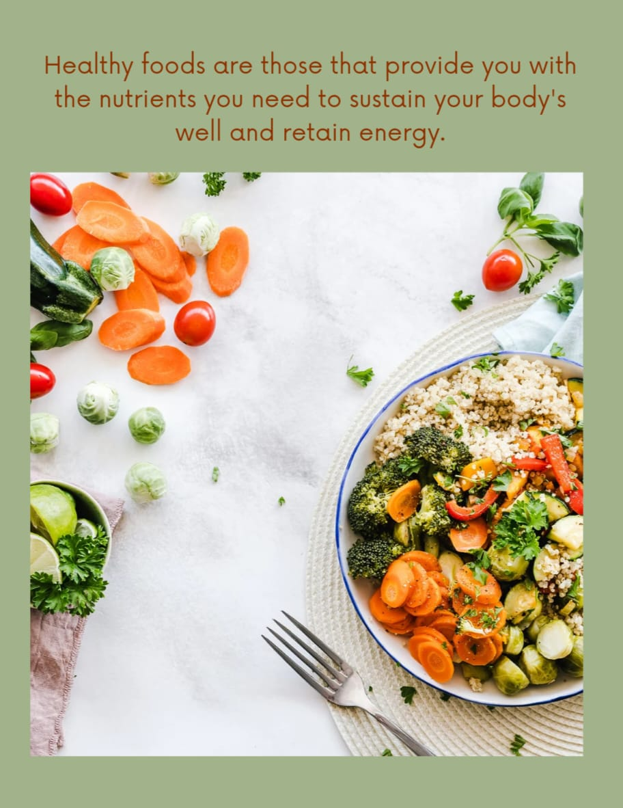

Diet predict

Button
Descriptive text for the feature of the Diet predictor
A diet predictor is typically an in-Telligent system that uses a variety of data, often powered by machine learning, to provide personalized dietary insights and recommendations.
Button
Are you a vegetarian or not?:
Vegetarian
Non vegatarian
How active were you per week before the diet?:
30 minute to one hour per week
More than 2 hours per week
Less than 30 minutes
1 hour to 2 hours per week
What was your original weight (in Kg)?
In how many months did you lose your weight?
What was your final weight (Kg)?
What was your old diet ?:
Healthy [Roti, Rice, Vegetables, Pulses(Daal)]
Unhealthy [ Oily, Cheese, Pizza, Cold Drinks, Chips ]
Do you walk to work or school before starting?:
yes
No
Are you allergic (or intolerant) to some foods?:
No
Fish
Predict